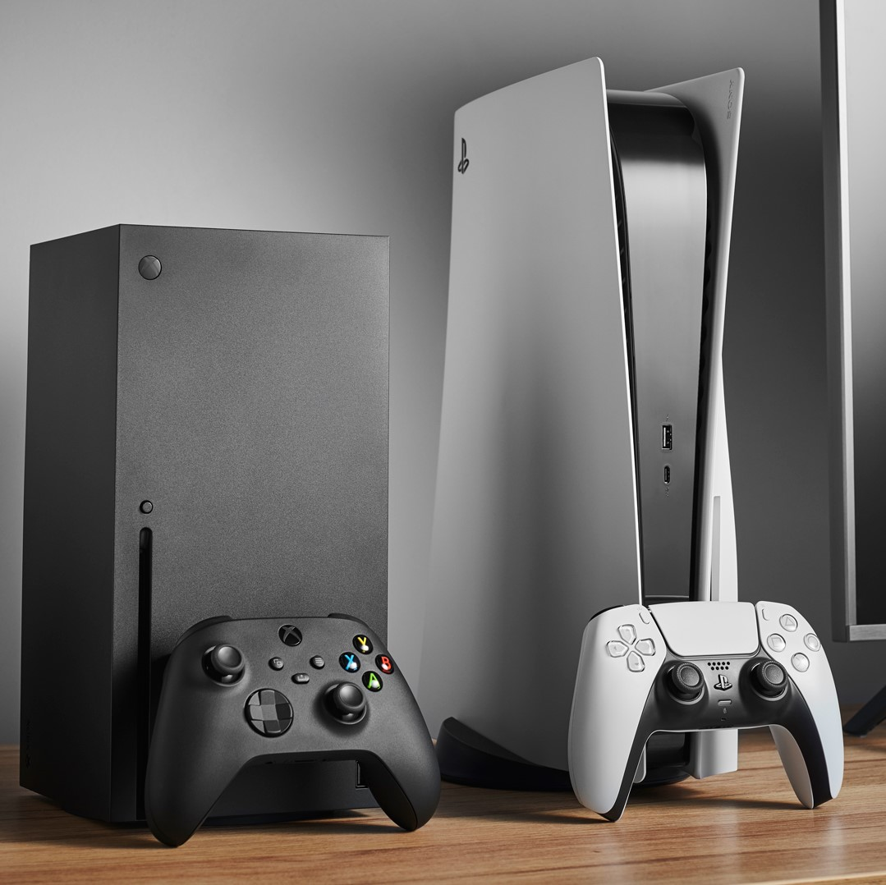

Производителността на двете конзоли е почти идентична. Технически погледнато, Xbox Series X има малко повече мощност в своята кула от PS5, но не е достатъчно забележимо, за да се почувства пагубно за PS5 и неговата производителност. Графичната точност също е идентична между двете конзоли, което прави решението още по-трудно. Така че, ако производителността е проблем, с който се сблъсквате, тогава няма да се притеснявате за тези две конзоли от следващо поколение.